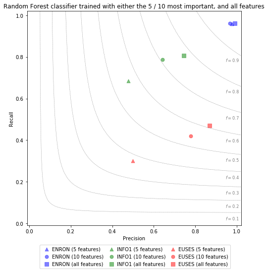

Description
In Study 3, we investigate the effect of feature selection on the performance of learnd prediction models for the given classification task. In addition to the results shown in the main paper, we also investigated the prediction performance of Random Forest models, when trained only with a set number of the most important features. The features were selected on a per-dataset basis. I.e. the features chosen for the Enron Errors dataset are not necessarily the same as chosen for the Info1 dataset. The evaluation results were obtained by the same gridsearch-optimized, 10-10 crossvalidation scheme as employed for the main results presented in the paper.
Plot Type
To compare model prediction performances, we employ a custom plot type, the Precision / Recall / F1 plot, that combines precision, recall, and f1-performance for a specific evaluated model. The evaluation result of each trained model is illustrated by a symbol in the plot area. For any given symbol in the plot, its horizontal position corresponds to the precision score of the evaluated model. Likewise, its vertical precision corresponds to the Recall score of the evaluated model. Lastly, the symbol's position in relation to radial lines indicate the model's achieved F1 measure.
The first term in the legend refers to the dataset employed for the specific evaluation. E.g. ENRON implies that the Random Forest classifier was trained and evaluated on the Enron Errors dataset. The bracket information provides insight as to how many of the most important features were used for training and evaluation.
Plot
Data CSV